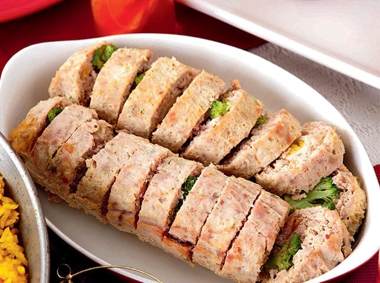

Embutido

Sausage of the Philippines
This food was actually introduced by the spaniards and especially tasty with banana ketchup
Ingredients
- 1 cup of bread crumbs
- 1 cup of nestle fresh milk
- 1 kg of ground pork
- 1 pc of carrot
- 3 tbsp of pickle relish
- 1/4 cup of raisins
- 1 pc of red bell pepper
- 1 pc of green bell pepper
- 3 satches of MAGGI magic sarap 8g
- 3 pcs of hard boild egg
- 1/4 cup of vegetable oil
Steps on how to make Embutido
- Combine breadcrumbs and fresh milk. Set aside for 5 minutes.
- Combine breadcrumbs and milk mixture with ground pork, carrot, pickle relish, raisins and bell peppers. Season with MAGGI MAGIC SARAP® and mix well.
- Brush a little oil in aluminum foil and flatten 1 cup of the mixture. Place egg in a row and carefully roll into a log with the egg in the middle. Tie both ends of aluminum foil to tighten.
- Steam for 30 minutes and set aside to cool. Unwrap and gently sauté until golden brown. Slice and serve with preferred dipping sauce.